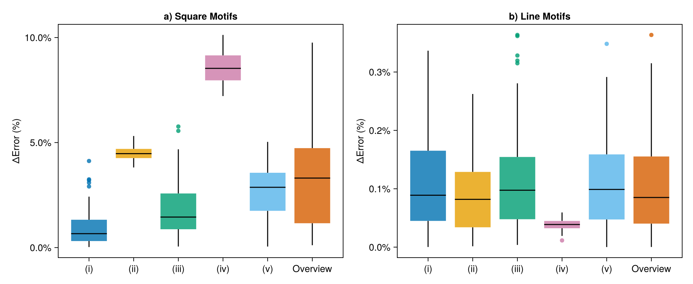

Recurrence Quantification Analysis
The recurrence microstate analysis allows us to estimate values of typical RQA measures, such as determinism and laminarity, with a good precision, and defines some novel quantifiers. We will demonstate in this page how compute these quantifiers using a uniform distribution as input.
julia> using RecurrenceMicrostatesAnalysis, Distributions # Generate our data =Djulia> data = rand(Uniform(0, 1), 3000);julia> th, s = find_parameters(data, 3)(0.25572081797823965, 5.7204371238266285)julia> dist = distribution(data, th, 3);
Recurrence Entropy
To compute the recurrence entropy, it is possible to use the rentropy function that receives a recurrence motif probability distribution.
julia> entr = rentropy(dist)5.718404481897597
The rentropy function has also a keyword argument that can be used to ignore some motifs.
julia> entr = rentropy(dist; ignore_motifs = [1, 512])5.599560405648806
Note that the kword ignore_motifs uses as index the notation of Julia, beginning in 1, instead 0. So, the motif 0 is identified by the number 1.
Recurrence Rate
The recurrence rate (RR) can be computed using a similar method to the recurrence entropy.
julia> rr = rrate(dist)0.44838154576472355
Since the recurrence rate is an estimated measure, it has a small error, how you can check in the following graphic, that displays the relative error between the RR computed by RecurrenceMicrostatesAnalysis.jl and the standard approach. 
Determinism
The determinism (DET) can be computed using a recurrence motifs probability distribution and the recurrence rate. It is important to note that it can be done using two motif constrained shapes: :square or :diagonal.
julia> det = determinism(rr, dist)0.6944755073547416julia> det = determinism(rr, distribution(data, th, 3; shape = :diagonal))0.6968576098248495
Similar to RR, the determinism is a quantifier estimated using recurrence microstates analysis, so it has a small error that is demonstrated in the following figure. 
(i) is the uniform distribution, (ii) is the Lorenz system, (iii) is the Logistic map, (iv) is the Rössler system, and (v) is the Bernoulli shifted generalized.
We implement an way to do it without the need to compute the recurrence distributions.
julia> det = determinism(data, th)(0.6963992381760649, 0.4474773772437324)
When we estimate DET directly using this function overload, the library will automatically use a diagonal motif constrained shape. If you want to use a square shape, try:
julia> det = determinism(data, th; mode = :square)ERROR: MethodError: no method matching determinism(::Vector{Float64}, ::Float64; mode::Symbol) This error has been manually thrown, explicitly, so the method may exist but be intentionally marked as unimplemented. Closest candidates are: determinism(::AbstractArray, ::Float64; r) got unsupported keyword argument "mode" @ RecurrenceMicrostatesAnalysis ~/.julia/packages/RecurrenceMicrostatesAnalysis/Wnk5H/src/rqa/det.jl:99 determinism(::Float64, ::Vector{Float64}) got unsupported keyword argument "mode" @ RecurrenceMicrostatesAnalysis ~/.julia/packages/RecurrenceMicrostatesAnalysis/Wnk5H/src/rqa/det.jl:41
Laminarity
The laminarity (LAM) can be computed with a method similar to determinism (DET). It is important to note that it can be done using two motif constrained shapes: :square or :line.
julia> lam = laminarity(rr, dist)0.6991851224466841julia> lam = laminarity(rr, distribution(data, th, 3; shape = :line))0.6991305325984107
In the same way, laminarity has a small error associated to it estimation. You can check it in the next figure. 
(i) is the uniform distribution, (ii) is the Lorenz system, (iii) is the Logistic map, (iv) is the Rössler system, and (v) is the Bernoulli shifted generalized.
We implement an way to do it without the need to compute the recurrence distributions.
julia> lam = laminarity(data, th)(0.6999950240504229, 0.4471888443851061)
When we estimate LAM directly using this function overload, the library will automatically use a line motif constrained shape. If you want to use a square shape, try:
julia> lam = laminarity(data, th; mode = :square)ERROR: MethodError: no method matching laminarity(::Vector{Float64}, ::Float64; mode::Symbol) This error has been manually thrown, explicitly, so the method may exist but be intentionally marked as unimplemented. Closest candidates are: laminarity(::AbstractArray, ::Float64; r) got unsupported keyword argument "mode" @ RecurrenceMicrostatesAnalysis ~/.julia/packages/RecurrenceMicrostatesAnalysis/Wnk5H/src/rqa/lam.jl:98 laminarity(::Float64, ::Vector{Float64}) got unsupported keyword argument "mode" @ RecurrenceMicrostatesAnalysis ~/.julia/packages/RecurrenceMicrostatesAnalysis/Wnk5H/src/rqa/lam.jl:41